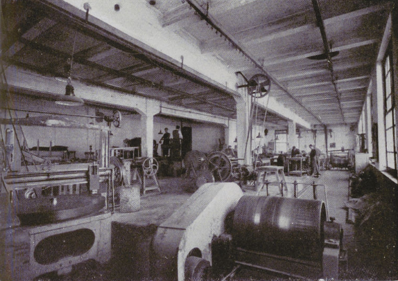
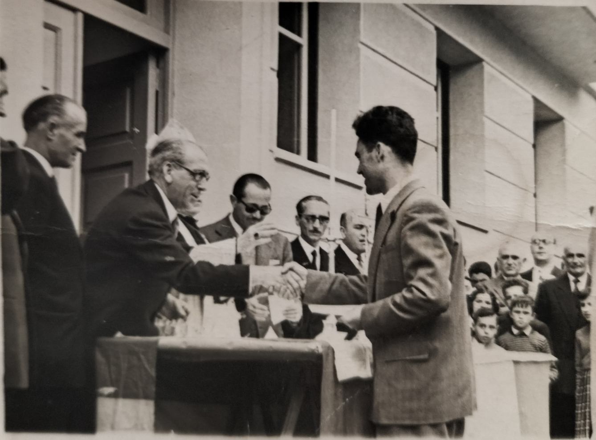

Other research interests
Working-class and labour history
Alongside my research in mathematics and machine learning, I am interested in social history, particularly in the Basque Country and Navarre. My current project focuses on Estella-Lizarra during the Franco dictatorship (1939–1975), examining industrial development, labour relations, and the emergence of a new industrial working class.
I use this small Navarrese town as a case study to explore how economic and political power became intertwined under Francoism. Drawing on archival documents, company regulations, oral testimonies, and family collections, I examine how local industrial elites exercised authority both inside the factory and beyond its walls.
José Babiano Mora’s studies of Spanish Fordism and industrial paternalism provide a central framework for this research. His work distinguishes the paternalistic and militarised forms of labour discipline of the early dictatorship from the expansion of Fordist production in the 1960s, while examining how the former helped prepare the ground for the latter. In Estella-Lizarra, I investigate how company welfare, factory discipline, and the rationalisation of production interacted, and how workers negotiated and resisted these arrangements.



Selected references
- Babiano Mora, J. (1993). Las peculiaridades del fordismo español. Cuadernos de Relaciones Laborales, 3, 77–94.
- Babiano Mora, J. (1998). Paternalismo industrial y disciplina fabril en España (1938–1958). Consejo Económico y Social.